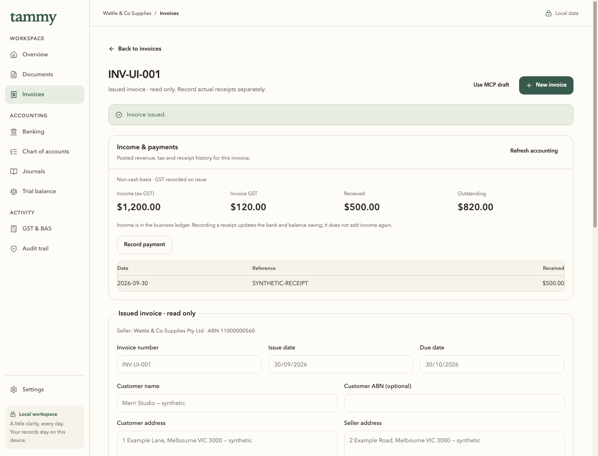
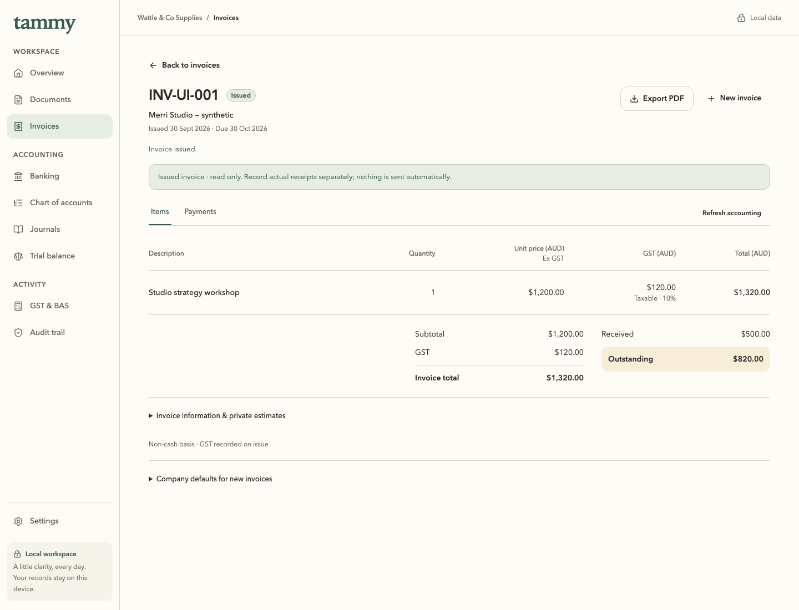
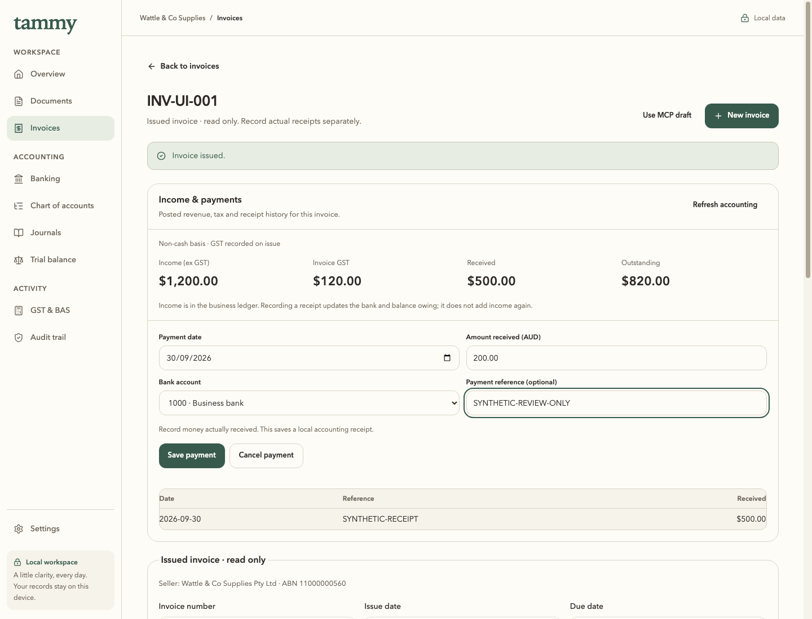
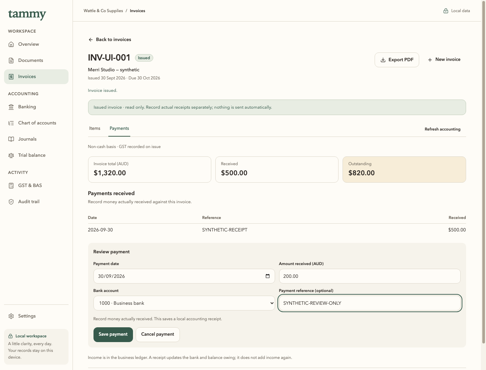
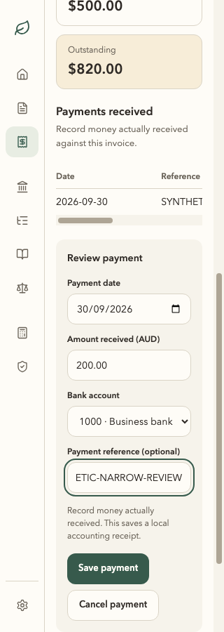

Issued invoice detail & receipts
Board 07 is the approved visual reference. Before and after application frames use the same 1440 × 1100 viewport, fixed clock and isolated synthetic invoice. They are scaled uniformly for this viewer; open an image to inspect its original pixels.
Issued items · one confirmed receipt




Payment review · existing $500 receipt, another $200 proposed




320 px · real cancelled payment review

Capture provenance, concrete gaps and validation. This viewer is visual evidence, not MAS, Windows 11 or production ATO qualification.